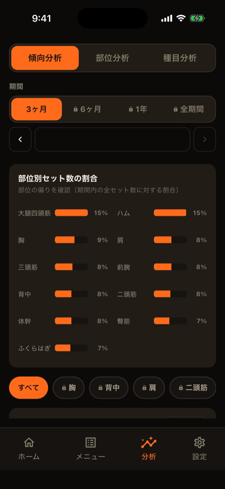
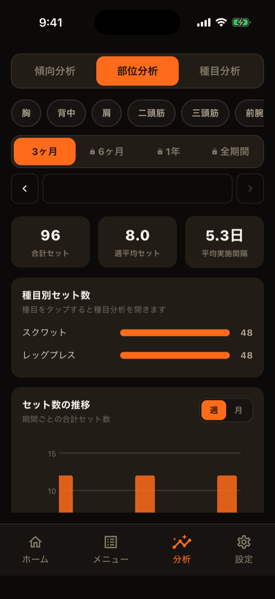
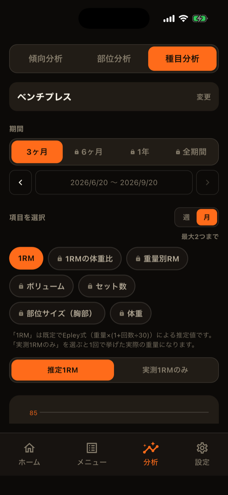
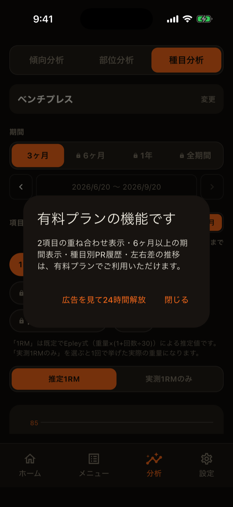

分析タブは、記録の積み重ねを、グラフで振り返るためのタブです。上部のセグメントで、「傾向分析」「部位分析」「種目分析」を切り替えます。左から右へ、見る範囲が狭くなります。タップのほか、画面を左右にスワイプしても切り替えられます。
期間の選び方
3つの分析とも、期間を「3ヶ月／6ヶ月／1年／全期間」から選べます。日付を指定するカスタム期間もあります。3ヶ月・6ヶ月・1年は、「‹ ›」で前後の期間へ移動できます。
傾向分析：トレーニング全体を見る
- 部位別セット数の割合：期間内に、どの部位を何％やったかを横棒で示します。
- 記録の推移：セット数・回数・時間・頻度を、週単位または月単位のグラフで見られます。項目は最大2つまで重ねて表示できます。「頻度」は、何日おきにトレーニングしているかを表します。部位のチップで絞り込むこともできます。

部位分析：1つの部位を深く見る
部位を1つ選んで、その部位のセット数を見ます。
- 合計セット・週平均セット・平均実施間隔の要約
- 種目別のセット数（タップすると、その種目の種目分析が開きます）
- 細分類の割合とセット数の推移（複数の細分類にまたがる種目は、セットを均等に按分します）
- セット数と部位サイズ（体の記録）を重ねたグラフ

種目分析：1つの種目を深く見る
種目を選ぶと、次の項目から最大2つまで選んで、1つのグラフに重ねられます。
- 1RM：Epley式による推定値。「実測1RMのみ」に切り替えて、1回のセットの重量だけを使うこともできます。
- 1RMの体重比：推定1RMを体重で割った値。
- 重量別RM：選んだ重量で挙げられた最大回数。
- ボリューム：重量×回数×セット数。
- セット数
- 部位サイズ：体の記録の、対応する部位の周径。
- 体重
ボリュームやセット数のように積み上げる量は棒グラフ、1RMのようにその時点の値を表す量は折れ線で表示されます。グラフはタップや長押しで具体的な値を確認でき、多い時は横にスクロールできます。
グラフの下には、種目ごとのPR履歴（推定1RM・実測1RM・ボリュームのベスト）が表示されます。左右を分けて記録する種目では、左右差の推移も見られます。

セット数の数え方
ウォームアップのセットは、セット数に含めません。ホームの部位別コンディションや、目標のセット数も同じ基準です。
無料と有料の範囲
- 無料：期間は3ヶ月まで。種目分析の項目は1つまで。傾向分析の部位絞り込みは「すべて」のみ。
- 有料：6ヶ月・1年・全期間・カスタム期間、2つの項目の重ね合わせ、PR履歴、左右差の推移、傾向分析の部位絞り込み。
有料の項目もチップは表示され、タップすると案内が出ます。分析タブに限り、広告を見ることで24時間だけ有料機能を使うこともできます（30日に1回まで）。
種目ライブラリから開く種目の詳細（進捗）画面でも、推定1RMとボリュームの推移や、直近のセットごとの記録を見られます。期間の制限は分析タブと同じ考え方です（3ヶ月までは無料）。

LiFTYは、アカウント作成なしですぐに記録を始められる筋トレ記録アプリです。
App Storeでダウンロード